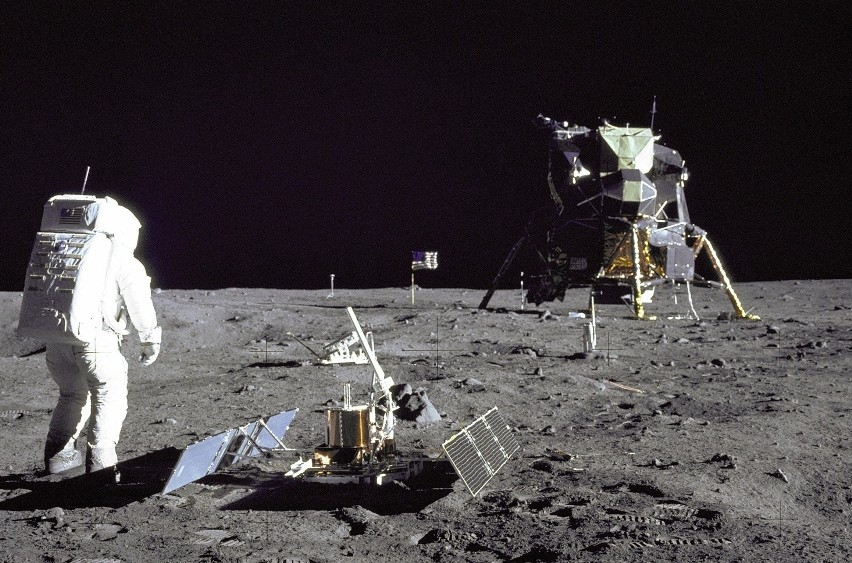
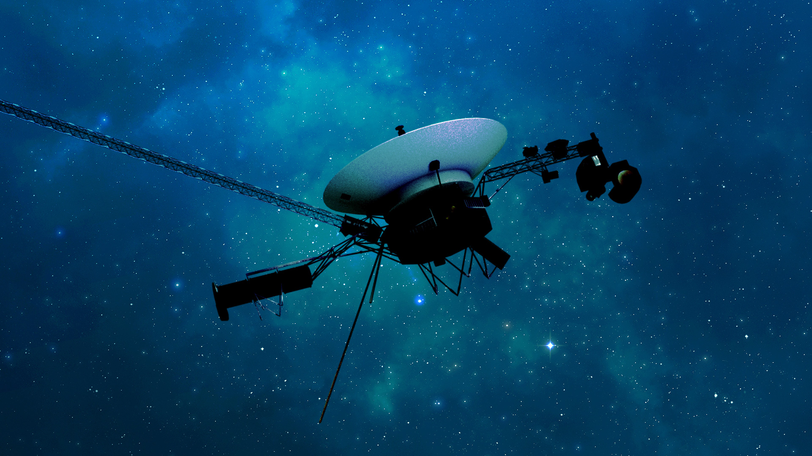
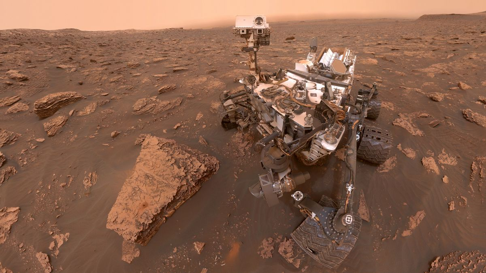
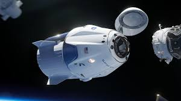

Apollo 11
Misja Apollo 11 była pierwszą, podczas której człowiek wylądował na Księżycu.

Voyager 1
Voyager 1 jest najdalej oddaloną sondą kosmiczną.

Curiosity Rover
Curiosity bada powierzchnię Marsa od 2011 roku.

W 2020 roku SpaceX wysłał załogę na Międzynarodową Stację Kosmiczną.